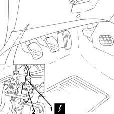

5550D10 brake light switch - r+r
- Path
- Procedures > 55 ELECTRICAL EQUIPMENT > 5550 MANOEUVRING AND WARNING SIGNALS > 5550D brake and reversing lights > 5550D10 brake light switch - r+r
- Kind
- repair procedure (removal / refitting; the operation number is the code)
- Applies to
- engines: 1.2 8v, 1.2 16v, 1.4 16v; all production periods
- Interactive page
- https://sloeber94.github.io/elrnDB-lYpsln/en/#/2429430
Applies to: engines: 1.2 8v, 1.2 16v, 1.4 16v; all production periods
 Removing
Removing
 Refitting
RefittingEnsure that the ignition key is in OFF position, then disconnect the battery negative terminal (-).
 | Name | Connector |
|---|---|---|
- | Battery |
1. Disconnect the brake light switch electrical connection.
| Name | Connector |
|---|---|---|
1 | Brake pedal switch |
2. Turn and remove the brake light switch.

Applies to: engines: 1.2 8v, 1.2 16v, 1.4 16v; all production periods
Refitting
RemovingPress the brake pedal, then refit the brake pedal switch and turn clockwise/anticlockwise until the retainer tooth can be heard clicking into the seat on the bracket.
Release the brake pedal and pull back until the brake servo rod is fully released.
Check there is clearance between the end of the switch and the contact plate on the brake pedal.
Connect the brake light switch electrical connection.
Connect the negative (-) battery terminal.
Check that the brake lights are off with the brake pedal released in the rest position.